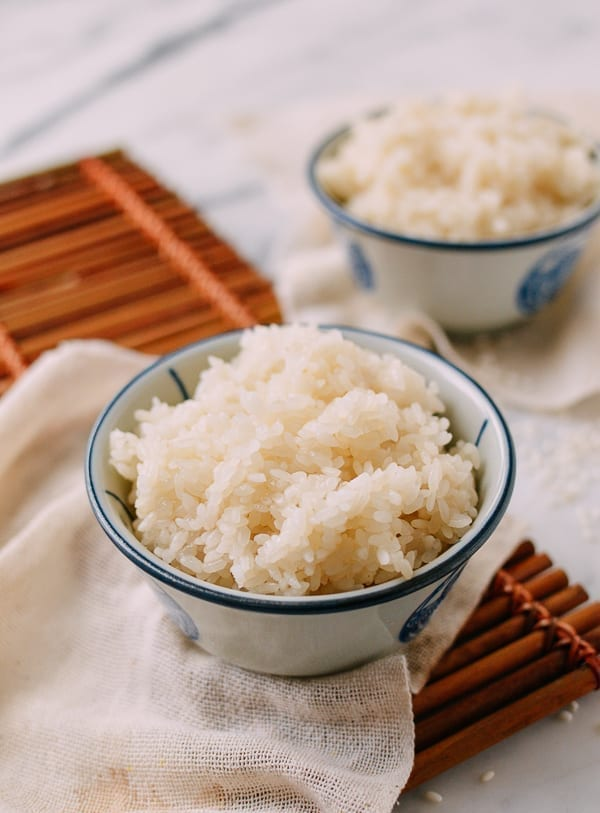

Sticky Rice

What is Sticky Rice?
Glutinous rice is a type of rice grown mainly in Southeast and East Asia, Northeastern India and Bhutan which has opaque grains, very low amylose content, and is especially sticky when cooked. It is widely consumed across Asia.
Ingredients for Sticky Rice
- 2 cups sweet rice/sticky rice/glutinous rice
- Water
Steps to Make Sticky Rice
- Add the sticky rice to a mixing bowl or other deep container. Fill it with water so that the water level is at least 3 inches above the rice, as the rice will expand when soaking.
- Soak for 6 to 24 hours. Soak it longer if you want your sticky rice to have a softer texture.
- Drain the water (no need to shake off the excess water), and evenly arrange the soaked sticky rice on a heat-proof, rimmed plate or bamboo steamer lined with natural steamer liners or parchment paper.
- Cover and steam for 30-45 minutes. When making larger batch of rice, steam in two batches or steam longer. You can check the rice and increase the steaming time if need be.
- Keep the sticky rice in the steamer or covered to prevent drying out until you serve it or use it in a recipe.